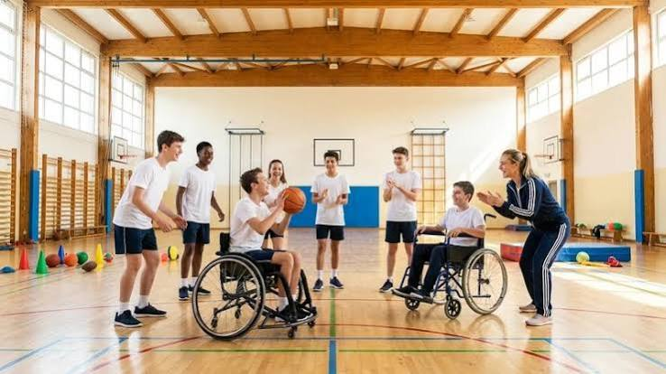

O Colégio Horizonte Inclusivo é uma escola de Ensino Fundamental e Médio projetada desde a sua fundação sob os princípios do Desenho Universal para a Aprendizagem (DUA). Ela não foi adaptada para ser acessível; ela foi construída para ser naturalmente de todos.

Acessibilidade é a possibilidade e a condição de alcance, percepção e entendimento para a utilização, com segurança e autonomia, de espaços, transportes, informação, comunicação e tecnologias.O conceito busca garantir igualdade de oportunidades para pessoas com deficiência ou com mobilidade reduzida.
O Transtorno do Espectro Autista (TEA) é uma condição de desenvolvimento neurológico. Ele afeta a forma como a pessoa se comunica, interage socialmente e percebe o mundo. É chamado de "espectro" porque varia muito de pessoa para pessoa: algumas têm uma vida totalmente independente, enquanto outras precisam de apoio constante. Características comuns incluem hipersensibilidade a sons ou luzes, preferência por rotinas estruturadas e interesses focados em temas específicos.
A surdez é a perda total ou parcial da audição. Ela pode ser congênita (de nascença) ou adquirida ao longo da vida. As pessoas surdas podem se comunicar de diversas formas: muitas utilizam as línguas de sinais (como a Libras no Brasil) como sua língua materna, enquanto outras preferem a leitura labial ou o uso de aparelhos auditivos (comunidade surda oralizada).